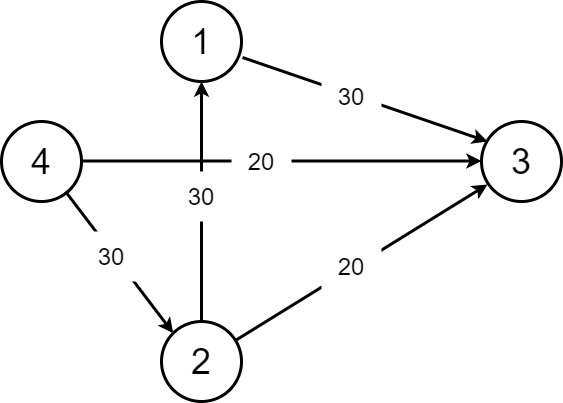
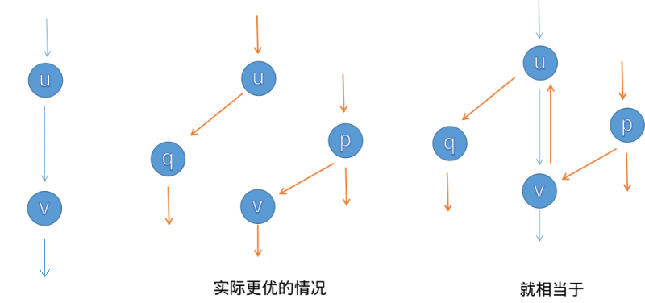
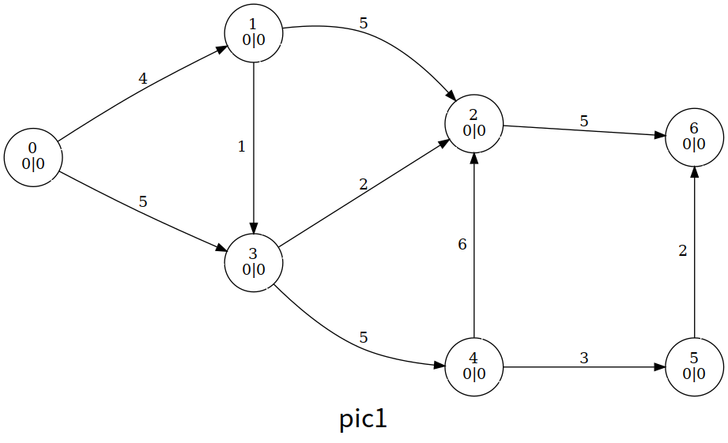

最大流
网络流基本概念参见 网络流简介
概述
我们有一张图，要求从源点流向汇点的最大流量（可以有很多条路到达汇点），就是我们的最大流问题。
Ford-Fulkerson 增广路算法
该方法通过寻找增广路来更新最大流，有 EK,dinic,SAP,ISAP 主流算法。
求解最大流之前，我们先认识一些概念。
残量网络
首先我们介绍一下一条边的剩余容量
对于流函数
注意，剩余容量大于 0 的边可能不在原图
增广路
在原图
或者说，在残量网络

我们从
-
这条 增广路 的总流量为 。到 的时候还是 ，到 了就只有 了。 -
这样子我们就很好的保留了 的流量。
所以我们这张图的最大流就应该是
求最大流是很简单的，接下来讲解求最大流的 3 种方法。
Edmonds-Karp 动能算法（EK 算法）
这个算法很简单，就是 BFS 找增广路，然后对其进行 增广。你可能会问，怎么找？怎么增广？
-
找？我们就从源点一直 BFS 走来走去，碰到汇点就停，然后增广（每一条路都要增广）。我们在 BFS 的时候就注意一下流量合不合法就可以了。
-
增广？其实就是按照我们找的增广路在重新走一遍。走的时候把这条路的能够成的最大流量减一减，然后给答案加上最小流量就可以了。
再讲一下 反向边。增广的时候要注意建造反向边，原因是这条路不一定是最优的，这样子程序可以进行反悔。假如我们对这条路进行增广了，那么其中的每一条边的反向边的流量就是它的流量。

讲一下一些小细节。如果你是用邻接矩阵的话，反向边直接就是从
EK 算法的时间复杂度为
参考代码
#define maxn 250
#define INF 0x3f3f3f3f
struct Edge {
int from, to, cap, flow;
Edge(int u, int v, int c, int f) : from(u), to(v), cap(c), flow(f) {}
};
struct EK {
int n, m; // n：点数，m：边数
vector<Edge> edges; // edges：所有边的集合
vector<int> G[maxn]; // G：点 x -> x 的所有边在 edges 中的下标
int a[maxn], p[maxn]; // a：点 x -> BFS 过程中最近接近点 x 的边给它的最大流
// p：点 x -> BFS 过程中最近接近点 x 的边
void init(int n) {
for (int i = 0; i < n; i++) G[i].clear();
edges.clear();
}
void AddEdge(int from, int to, int cap) {
edges.push_back(Edge(from, to, cap, 0));
edges.push_back(Edge(to, from, 0, 0));
m = edges.size();
G[from].push_back(m - 2);
G[to].push_back(m - 1);
}
int Maxflow(int s, int t) {
int flow = 0;
for (;;) {
memset(a, 0, sizeof(a));
queue<int> Q;
Q.push(s);
a[s] = INF;
while (!Q.empty()) {
int x = Q.front();
Q.pop();
for (int i = 0; i < G[x].size(); i++) { // 遍历以 x 作为起点的边
Edge& e = edges[G[x][i]];
if (!a[e.to] && e.cap > e.flow) {
p[e.to] = G[x][i]; // G[x][i] 是最近接近点 e.to 的边
a[e.to] =
min(a[x], e.cap - e.flow); // 最近接近点 e.to 的边赋给它的流
Q.push(e.to);
}
}
if (a[t]) break; // 如果汇点接受到了流，就退出 BFS
}
if (!a[t])
break; // 如果汇点没有接受到流，说明源点和汇点不在同一个连通分量上
for (int u = t; u != s;
u = edges[p[u]].from) { // 通过 u 追寻 BFS 过程中 s -> t 的路径
edges[p[u]].flow += a[t]; // 增加路径上边的 flow 值
edges[p[u] ^ 1].flow -= a[t]; // 减小反向路径的 flow 值
}
flow += a[t];
}
return flow;
}
};
Dinic 算法
Dinic 算法 的过程是这样的：每次增广前，我们先用 BFS 来将图分层。设源点的层数为
通过分层，我们可以干两件事情：
- 如果不存在到汇点的增广路（即汇点的层数不存在），我们即可停止增广。
- 确保我们找到的增广路是最短的。（原因见下文）
接下来是 DFS 找增广路的过程。
我们每次找增广路的时候，都只找比当前点层数多
Dinic 算法有两个优化：
- 多路增广：每次找到一条增广路的时候，如果残余流量没有用完怎么办呢？我们可以利用残余部分流量，再找出一条增广路。这样就可以在一次 DFS 中找出多条增广路，大大提高了算法的效率。
- 当前弧优化：如果一条边已经被增广过，那么它就没有可能被增广第二次。那么，我们下一次进行增广的时候，就可以不必再走那些已经被增广过的边。
时间复杂度
设点数为
首先考虑单轮增广的过程。在应用了 当前弧优化 的前提下，对于每个点，我们维护下一条可以增广的边，而当前弧最多变化
接下来我们证明，最多只需
我们先回顾下 Dinic 的增广过程。对于每个点，Dinic 只会找比该点层数多
首先容易发现，对于图上的每个点，一轮增广后其层数一定不会减小。而对于汇点
对于后者，我们考虑用反证法证明。如果
从而我们证明了汇点的层数在一轮增广后一定增大，即增广过程最多进行
综上 Dinic 的最坏时间复杂度为
特别地，在求解二分图最大匹配问题时，Dinic 算法的时间复杂度是
首先我们来简单归纳下求解二分图最大匹配问题时，建立的网络的特点。我们发现这个网络中，所有边的流量均为
对于单位网络，一轮增广的时间复杂度为
接下来我们试着求出增广轮数的上界。假设我们已经先完成了前
因为网络上所有边的流量均为
综上，对于包含二分图最大匹配在内的单位网络，Dinic 算法可以在
参考代码
#define maxn 250
#define INF 0x3f3f3f3f
struct Edge {
int from, to, cap, flow;
Edge(int u, int v, int c, int f) : from(u), to(v), cap(c), flow(f) {}
};
struct Dinic {
int n, m, s, t;
vector<Edge> edges;
vector<int> G[maxn];
int d[maxn], cur[maxn];
bool vis[maxn];
void init(int n) {
for (int i = 0; i < n; i++) G[i].clear();
edges.clear();
}
void AddEdge(int from, int to, int cap) {
edges.push_back(Edge(from, to, cap, 0));
edges.push_back(Edge(to, from, 0, 0));
m = edges.size();
G[from].push_back(m - 2);
G[to].push_back(m - 1);
}
bool BFS() {
memset(vis, 0, sizeof(vis));
queue<int> Q;
Q.push(s);
d[s] = 0;
vis[s] = 1;
while (!Q.empty()) {
int x = Q.front();
Q.pop();
for (int i = 0; i < G[x].size(); i++) {
Edge& e = edges[G[x][i]];
if (!vis[e.to] && e.cap > e.flow) {
vis[e.to] = 1;
d[e.to] = d[x] + 1;
Q.push(e.to);
}
}
}
return vis[t];
}
int DFS(int x, int a) {
if (x == t || a == 0) return a;
int flow = 0, f;
for (int& i = cur[x]; i < G[x].size(); i++) {
Edge& e = edges[G[x][i]];
if (d[x] + 1 == d[e.to] && (f = DFS(e.to, min(a, e.cap - e.flow))) > 0) {
e.flow += f;
edges[G[x][i] ^ 1].flow -= f;
flow += f;
a -= f;
if (a == 0) break;
}
}
return flow;
}
int Maxflow(int s, int t) {
this->s = s;
this->t = t;
int flow = 0;
while (BFS()) {
memset(cur, 0, sizeof(cur));
flow += DFS(s, INF);
}
return flow;
}
};
MPM 算法
MPM(Malhotra, Pramodh-Kumar and Maheshwari) 算法得到最大流的方式有两种：使用基于堆的优先队列，时间复杂度为
MPM 算法的整体结构和 Dinic 算法类似，也是分阶段运行的。在每个阶段，在
MPM 算法需要考虑顶点而不是边的容量。在分层网络
我们称节点
时间复杂度分析
MPM 算法的每个阶段都需要
阶段总数小于 V 的证明
MPM 算法在少于
引理 1：每次迭代后，从
证明：固定一个阶段
引理 2：
证明：从引理一我们得出，
参考代码
struct MPM {
struct FlowEdge {
int v, u;
long long cap, flow;
FlowEdge() {}
FlowEdge(int _v, int _u, long long _cap, long long _flow)
: v(_v), u(_u), cap(_cap), flow(_flow) {}
FlowEdge(int _v, int _u, long long _cap)
: v(_v), u(_u), cap(_cap), flow(0ll) {}
};
const long long flow_inf = 1e18;
vector<FlowEdge> edges;
vector<char> alive;
vector<long long> pin, pout;
vector<list<int> > in, out;
vector<vector<int> > adj;
vector<long long> ex;
int n, m = 0;
int s, t;
vector<int> level;
vector<int> q;
int qh, qt;
void resize(int _n) {
n = _n;
ex.resize(n);
q.resize(n);
pin.resize(n);
pout.resize(n);
adj.resize(n);
level.resize(n);
in.resize(n);
out.resize(n);
}
MPM() {}
MPM(int _n, int _s, int _t) {
resize(_n);
s = _s;
t = _t;
}
void add_edge(int v, int u, long long cap) {
edges.push_back(FlowEdge(v, u, cap));
edges.push_back(FlowEdge(u, v, 0));
adj[v].push_back(m);
adj[u].push_back(m + 1);
m += 2;
}
bool bfs() {
while (qh < qt) {
int v = q[qh++];
for (int id : adj[v]) {
if (edges[id].cap - edges[id].flow < 1) continue;
if (level[edges[id].u] != -1) continue;
level[edges[id].u] = level[v] + 1;
q[qt++] = edges[id].u;
}
}
return level[t] != -1;
}
long long pot(int v) { return min(pin[v], pout[v]); }
void remove_node(int v) {
for (int i : in[v]) {
int u = edges[i].v;
auto it = find(out[u].begin(), out[u].end(), i);
out[u].erase(it);
pout[u] -= edges[i].cap - edges[i].flow;
}
for (int i : out[v]) {
int u = edges[i].u;
auto it = find(in[u].begin(), in[u].end(), i);
in[u].erase(it);
pin[u] -= edges[i].cap - edges[i].flow;
}
}
void push(int from, int to, long long f, bool forw) {
qh = qt = 0;
ex.assign(n, 0);
ex[from] = f;
q[qt++] = from;
while (qh < qt) {
int v = q[qh++];
if (v == to) break;
long long must = ex[v];
auto it = forw ? out[v].begin() : in[v].begin();
while (true) {
int u = forw ? edges[*it].u : edges[*it].v;
long long pushed = min(must, edges[*it].cap - edges[*it].flow);
if (pushed == 0) break;
if (forw) {
pout[v] -= pushed;
pin[u] -= pushed;
} else {
pin[v] -= pushed;
pout[u] -= pushed;
}
if (ex[u] == 0) q[qt++] = u;
ex[u] += pushed;
edges[*it].flow += pushed;
edges[(*it) ^ 1].flow -= pushed;
must -= pushed;
if (edges[*it].cap - edges[*it].flow == 0) {
auto jt = it;
++jt;
if (forw) {
in[u].erase(find(in[u].begin(), in[u].end(), *it));
out[v].erase(it);
} else {
out[u].erase(find(out[u].begin(), out[u].end(), *it));
in[v].erase(it);
}
it = jt;
} else
break;
if (!must) break;
}
}
}
long long flow() {
long long ans = 0;
while (true) {
pin.assign(n, 0);
pout.assign(n, 0);
level.assign(n, -1);
alive.assign(n, true);
level[s] = 0;
qh = 0;
qt = 1;
q[0] = s;
if (!bfs()) break;
for (int i = 0; i < n; i++) {
out[i].clear();
in[i].clear();
}
for (int i = 0; i < m; i++) {
if (edges[i].cap - edges[i].flow == 0) continue;
int v = edges[i].v, u = edges[i].u;
if (level[v] + 1 == level[u] && (level[u] < level[t] || u == t)) {
in[u].push_back(i);
out[v].push_back(i);
pin[u] += edges[i].cap - edges[i].flow;
pout[v] += edges[i].cap - edges[i].flow;
}
}
pin[s] = pout[t] = flow_inf;
while (true) {
int v = -1;
for (int i = 0; i < n; i++) {
if (!alive[i]) continue;
if (v == -1 || pot(i) < pot(v)) v = i;
}
if (v == -1) break;
if (pot(v) == 0) {
alive[v] = false;
remove_node(v);
continue;
}
long long f = pot(v);
ans += f;
push(v, s, f, false);
push(v, t, f, true);
alive[v] = false;
remove_node(v);
}
}
return ans;
}
};
ISAP
在 Dinic 算法中，我们每次求完增广路后都要跑 BFS 来分层，有没有更高效的方法呢？
答案就是下面要介绍的 ISAP 算法。
和 Dinic 算法一样，我们还是先跑 BFS 对图上的点进行分层，不过与 Dinic 略有不同的是，我们选择在反图上，从
执行完分层过程后，我们通过 DFS 来找增广路。
增广的过程和 Dinic 类似，我们只选择比当前点层数少
与 Dinic 不同的是，我们并不会重跑 BFS 来对图上的点重新分层，而是在增广的过程中就完成重分层过程。
具体来说，设
容易发现，当
和 Dinic 类似，ISAP 中也存在 当前弧优化。
而 ISAP 还存在另外一个优化，我们记录层数为
参考代码
struct Edge {
int from, to, cap, flow;
Edge(int u, int v, int c, int f) : from(u), to(v), cap(c), flow(f) {}
};
bool operator<(const Edge& a, const Edge& b) {
return a.from < b.from || (a.from == b.from && a.to < b.to);
}
struct ISAP {
int n, m, s, t;
vector<Edge> edges;
vector<int> G[maxn];
bool vis[maxn];
int d[maxn];
int cur[maxn];
int p[maxn];
int num[maxn];
void AddEdge(int from, int to, int cap) {
edges.push_back(Edge(from, to, cap, 0));
edges.push_back(Edge(to, from, 0, 0));
m = edges.size();
G[from].push_back(m - 2);
G[to].push_back(m - 1);
}
bool BFS() {
memset(vis, 0, sizeof(vis));
queue<int> Q;
Q.push(t);
vis[t] = 1;
d[t] = 0;
while (!Q.empty()) {
int x = Q.front();
Q.pop();
for (int i = 0; i < G[x].size(); i++) {
Edge& e = edges[G[x][i] ^ 1];
if (!vis[e.from] && e.cap > e.flow) {
vis[e.from] = 1;
d[e.from] = d[x] + 1;
Q.push(e.from);
}
}
}
return vis[s];
}
void init(int n) {
this->n = n;
for (int i = 0; i < n; i++) G[i].clear();
edges.clear();
}
int Augment() {
int x = t, a = INF;
while (x != s) {
Edge& e = edges[p[x]];
a = min(a, e.cap - e.flow);
x = edges[p[x]].from;
}
x = t;
while (x != s) {
edges[p[x]].flow += a;
edges[p[x] ^ 1].flow -= a;
x = edges[p[x]].from;
}
return a;
}
int Maxflow(int s, int t) {
this->s = s;
this->t = t;
int flow = 0;
BFS();
memset(num, 0, sizeof(num));
for (int i = 0; i < n; i++) num[d[i]]++;
int x = s;
memset(cur, 0, sizeof(cur));
while (d[s] < n) {
if (x == t) {
flow += Augment();
x = s;
}
int ok = 0;
for (int i = cur[x]; i < G[x].size(); i++) {
Edge& e = edges[G[x][i]];
if (e.cap > e.flow && d[x] == d[e.to] + 1) {
ok = 1;
p[e.to] = G[x][i];
cur[x] = i;
x = e.to;
break;
}
}
if (!ok) {
int m = n - 1;
for (int i = 0; i < G[x].size(); i++) {
Edge& e = edges[G[x][i]];
if (e.cap > e.flow) m = min(m, d[e.to]);
}
if (--num[d[x]] == 0) break;
num[d[x] = m + 1]++;
cur[x] = 0;
if (x != s) x = edges[p[x]].from;
}
}
return flow;
}
};
Push-Relabel 预流推进算法
该方法在求解过程中忽略流守恒性，并每次对一个结点更新信息，以求解最大流。
通用的预流推进算法
首先我们介绍预流推进算法的主要思想，以及一个可行的暴力实现算法。
预流推进算法通过对单个结点的更新操作，直到没有结点需要更新来求解最大流。
算法过程维护的流函数不一定保持流守恒性，对于一个结点，我们允许进入结点的流超过流出结点的流，超过的部分被称为结点
若
预流推进算法维护每个结点的高度
高度函数5
准确地说，预流推进维护以下的一个映射
称
引理 1：设
算法只会在
推送（Push）
适用条件：结点
于是，我们尽可能将超额流从
如果
重贴标签（Relabel）
适用条件：如果结点
则将
初始化
上述将
通用算法
我们每次扫描整个图，只要存在结点
如图，每个结点中间表示编号，左下表示高度值

整个算法我们大致浏览一下过程，这里笔者使用的是一个暴力算法，即暴力扫描是否有溢出的结点，有就更新

最后的结果

可以发现，最后的超额流一部分回到了
但是实际上论文1指出只处理高度小于
核心代码
const int N = 1e4 + 4, M = 1e5 + 5, INF = 0x3f3f3f3f;
int n, m, s, t, maxflow, tot;
int ht[N], ex[N];
void init() { // 初始化
for (int i = h[s]; i; i = e[i].nex) {
const int &v = e[i].t;
ex[v] = e[i].v, ex[s] -= ex[v], e[i ^ 1].v = e[i].v, e[i].v = 0;
}
ht[s] = n;
}
bool push(int ed) {
const int &u = e[ed ^ 1].t, &v = e[ed].t;
int flow = min(ex[u], e[ed].v);
ex[u] -= flow, ex[v] += flow, e[ed].v -= flow, e[ed ^ 1].v += flow;
return ex[u]; // 如果 u 仍溢出，返回 1
}
void relabel(int u) {
ht[u] = INF;
for (int i = h[u]; i; i = e[i].nex)
if (e[i].v) ht[u] = min(ht[u], ht[e[i].t]);
++ht[u];
}
HLPP 算法
最高标号预流推进算法（Highest Label Preflow Push）在上述通用的预流推送算法中，在每次选择结点时，都优先选择高度最高的溢出结点，其算法算法复杂度为
具体地说，HLPP 算法过程如下：
- 初始化（基于预流推进算法）；
- 选择溢出结点中高度最高的结点
，并对它所有可以推送的边进行推送； - 如果
仍溢出，对它重贴标签，回到步骤 2； - 如果没有溢出的结点，算法结束。
一篇对最大流算法实际表现进行测试的论文2表明，实际上基于预流的算法，有相当一部分时间都花在了重贴标签这一步上。以下介绍两种来自论文3的能显著减少重贴标签次数的优化。
BFS 优化
HLPP 的上界为
在 BFS 的同时我们顺便检查图的连通性，排除无解的情况。
GAP 优化
HLPP 推送的条件是
以下的实现采取论文2中的实现方法，使用 B，其中 B[i] 中记录所有当前高度为
值得注意的是论文2中使用的桶是基于链表的栈，而 STL 中的 stack 默认的容器是 deque。经过简单的测试发现 vector，deque，list 在本题的实际运行过程中效率区别不大。
LuoguP4722【模板】最大流 加强版/预流推进
#include <cstdio>
#include <cstring>
#include <queue>
#include <stack>
using namespace std;
const int N = 1200, M = 120000, INF = 0x3f3f3f3f;
int n, m, s, t;
struct qxx {
int nex, t, v;
};
qxx e[M * 2 + 1];
int h[N + 1], cnt = 1;
void add_path(int f, int t, int v) { e[++cnt] = (qxx){h[f], t, v}, h[f] = cnt; }
void add_flow(int f, int t, int v) {
add_path(f, t, v);
add_path(t, f, 0);
}
int ht[N + 1], ex[N + 1],
gap[N]; // 高度; 超额流; gap 优化 gap[i] 为高度为 i 的节点的数量
stack<int> B[N]; // 桶 B[i] 中记录所有 ht[v]==i 的v
int level = 0; // 溢出节点的最高高度
int push(int u) { // 尽可能通过能够推送的边推送超额流
bool init = u == s; // 是否在初始化
for (int i = h[u]; i; i = e[i].nex) {
const int &v = e[i].t, &w = e[i].v;
if (!w || init == false && ht[u] != ht[v] + 1) // 初始化时不考虑高度差为1
continue;
int k = init ? w : min(w, ex[u]);
// 取到剩余容量和超额流的最小值，初始化时可以使源的溢出量为负数。
if (v != s && v != t && !ex[v]) B[ht[v]].push(v), level = max(level, ht[v]);
ex[u] -= k, ex[v] += k, e[i].v -= k, e[i ^ 1].v += k; // push
if (!ex[u]) return 0; // 如果已经推送完就返回
}
return 1;
}
void relabel(int u) { // 重贴标签（高度）
ht[u] = INF;
for (int i = h[u]; i; i = e[i].nex)
if (e[i].v) ht[u] = min(ht[u], ht[e[i].t]);
if (++ht[u] < n) { // 只处理高度小于 n 的节点
B[ht[u]].push(u);
level = max(level, ht[u]);
++gap[ht[u]]; // 新的高度，更新 gap
}
}
bool bfs_init() {
memset(ht, 0x3f, sizeof(ht));
queue<int> q;
q.push(t), ht[t] = 0;
while (q.size()) { // 反向 BFS, 遇到没有访问过的结点就入队
int u = q.front();
q.pop();
for (int i = h[u]; i; i = e[i].nex) {
const int &v = e[i].t;
if (e[i ^ 1].v && ht[v] > ht[u] + 1) ht[v] = ht[u] + 1, q.push(v);
}
}
return ht[s] != INF; // 如果图不连通，返回 0
}
// 选出当前高度最大的节点之一, 如果已经没有溢出节点返回 0
int select() {
while (B[level].size() == 0 && level > -1) level--;
return level == -1 ? 0 : B[level].top();
}
int hlpp() { // 返回最大流
if (!bfs_init()) return 0; // 图不连通
memset(gap, 0, sizeof(gap));
for (int i = 1; i <= n; i++)
if (ht[i] != INF) gap[ht[i]]++; // 初始化 gap
ht[s] = n;
push(s); // 初始化预流
int u;
while ((u = select())) {
B[level].pop();
if (push(u)) { // 仍然溢出
if (!--gap[ht[u]])
for (int i = 1; i <= n; i++)
if (i != s && i != t && ht[i] > ht[u] && ht[i] < n + 1)
ht[i] = n + 1; // 这里重贴成 n+1 的节点都不是溢出节点
relabel(u);
}
}
return ex[t];
}
int main() {
scanf("%d%d%d%d", &n, &m, &s, &t);
for (int i = 1, u, v, w; i <= m; i++) {
scanf("%d%d%d", &u, &v, &w);
add_flow(u, v, w);
}
printf("%d", hlpp());
return 0;
}
感受一下运行过程

其中 pic13 到 pic14 执行了 Relabel(4)，并进行了 GAP 优化。
脚注
-
Cherkassky B V, Goldberg A V. On implementing push-relabel method for the maximum flow problem[C]//International Conference on Integer Programming and Combinatorial Optimization. Springer, Berlin, Heidelberg, 1995: 157-171. ↩
-
Ahuja R K, Kodialam M, Mishra A K, et al. Computational investigations of maximum flow algorithms[J]. European Journal of Operational Research, 1997, 97(3): 509-542. ↩↩↩
-
Derigs U, Meier W. Implementing Goldberg's max-flow-algorithm—A computational investigation[J]. Zeitschrift für Operations Research, 1989, 33(6): 383-403. ↩
-
英语文献中通常称为“active“。 ↩
-
在英语文献中，一个结点的高度通常被称为“distance label”。此处使用的“高度”这个术语源自算法导论中的相关章节。你可以在机械工业出版社算法导论（原书第 3 版）的 P432 脚注中找到这么做的理由。 ↩
创建日期: July 11, 2018